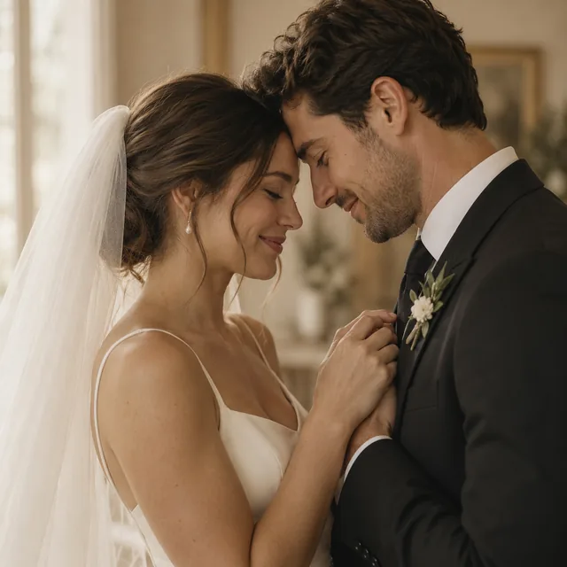
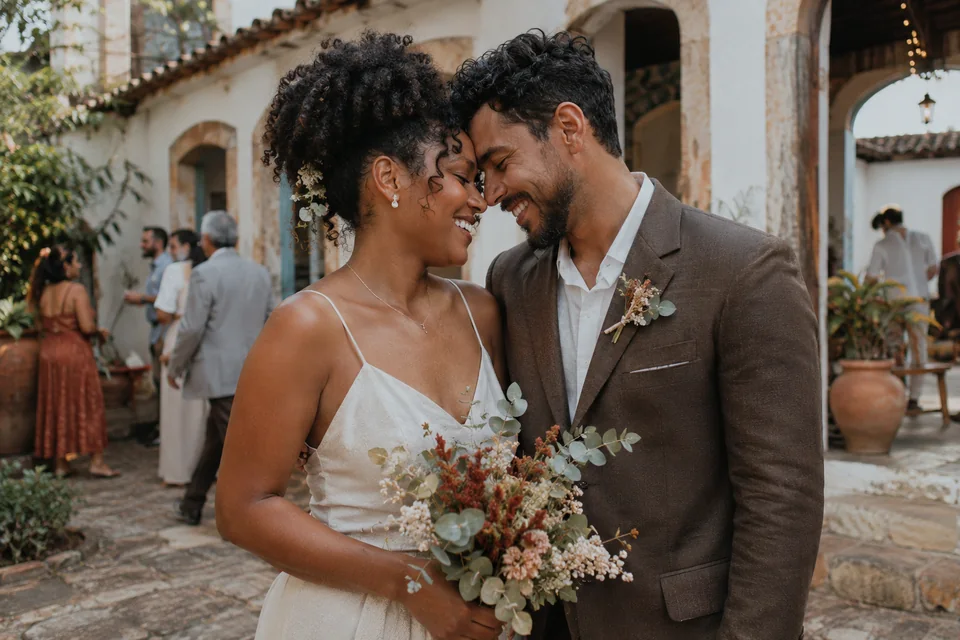
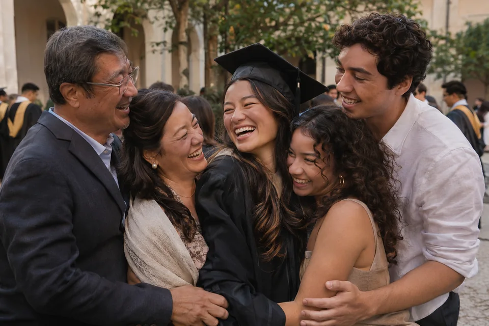
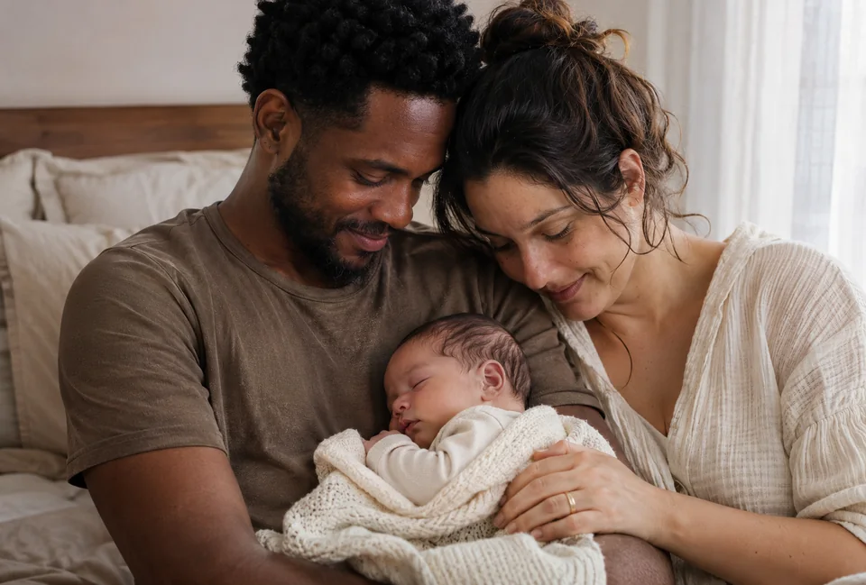
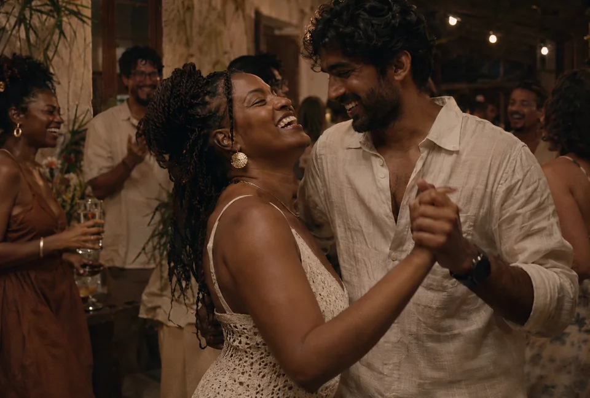
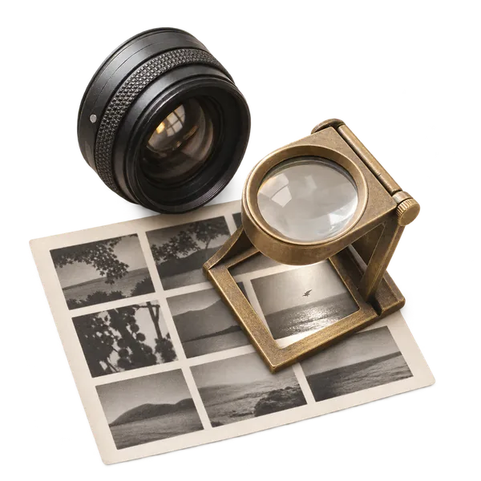
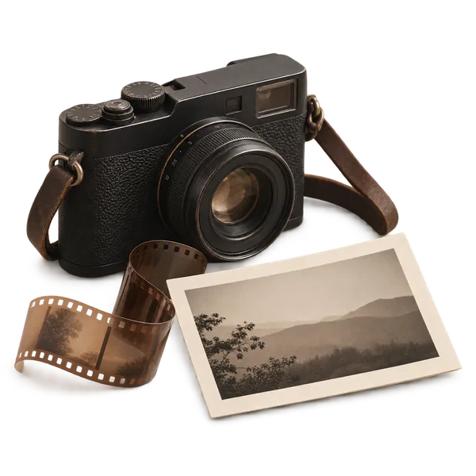

Formatura
O começo de novos caminhos.
Fotografia & filmes
Um olhar atento para os dias que mudam tudo. Fotografia e filmes que fazem você sentir cada momento outra vez.
Explore as experiênciasO começo de novos caminhos.

O amor como foi vivido.
Os primeiros dias, para sempre.
O olhar Entrever
Explore como a Entrever transforma amor, conquistas e novos começos em fotografia e filme. Um olhar atento ao que importa para você, do primeiro gesto à última lembrança.

01 / Casamentos
Do instante antes do sim à celebração, tudo o que fez esse dia ser de vocês.

02 / Formaturas
O orgulho, os encontros e a alegria de chegar até aqui, sem perder nenhum detalhe.

03 / Newborn
Pequenos gestos e uma vida inteira pela frente. Memórias feitas com calma e cuidado.

04 / Filmes
Vozes, movimento e emoção reunidos em um filme que faz o momento voltar.
Tem uma história chegando? Vamos pensar em como guardá-la.
Conte sua ideia para nósPor que escolher a Entrever
Do primeiro contato à entrega, cada escolha é feita para que você se sinta à vontade e se reconheça nas imagens.
Entendemos quem importa e quais momentos você quer guardar antes de ligar a câmera.
Orientação para você se sentir à vontade, sem transformar o dia em uma sequência de poses.
Os momentos importantes entram no plano. Os gestos espontâneos também encontram espaço.

Uma linguagem visual para que cada imagem e movimento conte a mesma história.

Seleção atenta e cores naturais para preservar a emoção de cada cena.
Uma entrega organizada para guardar, compartilhar e voltar a sentir quando quiser.
Casamento, formatura, primeiros dias ou outra ocasião especial. Conte o que está por vir e vamos pensar em um registro que faça sentido para você.
Por trás da Entrever
Sou o fotógrafo por trás da Entrever. Antes de fotografar, quero saber quem são as pessoas que você vai procurar com os olhos quando o dia começar. Entender isso muda o jeito de registrar tudo.
Durante o trabalho, dou direção quando ela ajuda e saio de cena quando o momento pede. Gosto das histórias como elas são: com risos fora de hora, silêncios, abraços demorados e detalhes que poderiam passar despercebidos.
Vamos conversarSeu próximo capítulo
Você me conta o que está por vir. Eu ajudo a transformar esse momento em fotografias e filmes que ainda vão fazer sentido daqui a muitos anos.